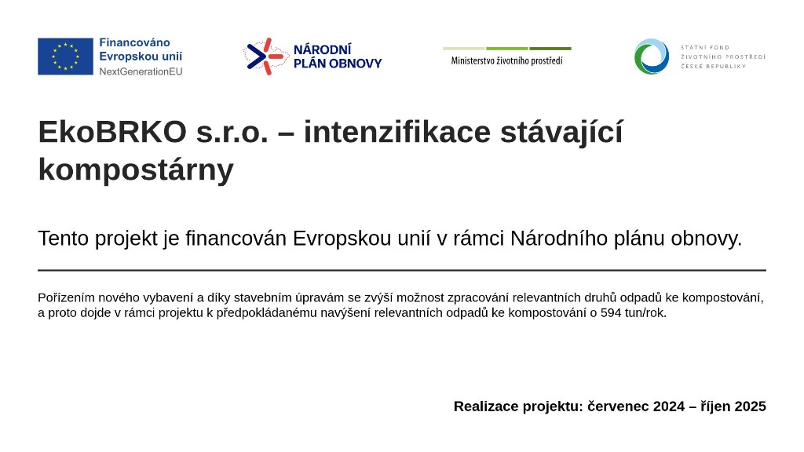

Otevírací doba
Jsme tu pro vás šest dní v týdnu, nebo po telefonické domluvě.
EkoBRKO · Přestavlky u Mnichova Hradiště
Zbavíme vás starostí s listím, trávou, větvemi, zeminou a výkopkem. Vše třídíme a zpracováváme – výsledkem je kvalitní kompost a zemina pro další použití.
EkoBRKO je zkratka pro ekologický, biologicky rozložitelný komunální odpad. Zbavujeme obce, firmy i jednotlivce starostí s odpady, jako jsou listí, tráva, větve, zemina a výkopek.
Zajistíme odvoz, následně vše roztřídíme a dále zpracujeme. Výsledkem je kvalitní kompost, použitelný jako skvělé hnojivo. Dále pak zemina, vhodná pro zušlechtění veřejných i soukromých zahrad a dalších ploch.
Jednoduché, rychlé a šetrné k přírodě.
Jsme tu pro vás šest dní v týdnu, nebo po telefonické domluvě.
Výkopek, zeminu a bioodpad k nám můžete přivést, nebo nám zavoláte a my to uděláme za vás.
Zajišťujeme výkopové práce, odvoz výkopku a recyklaci.
Do budoucna vám nabídneme také kontejnerové služby a recyklaci bio odpadu.
Uvedené ceny jsou bez DPH. Ceník platný od . Doprava materiálu dle individuální domluvy.
Areál se nachází poblíž Mnichova Hradiště v obci Přestavlky. Příjezd z obce Hoškovice, dále přes dálnici a za mostem doprava.
EkoBRKO s.r.o.
Po – Pá: 7:00 – 16:00
So: zavřeno – dle předchozí telefonické domluvy 8:00 – 12:00
E-mail: info@ekobrkomh.cz
Název: EkoBRKO s.r.o.
Spisová značka: C 339222 vedená u Městského soudu v Praze
IČ: 09627022
Informace k projektu intenzifikace stávající kompostárny.
